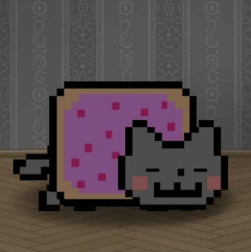
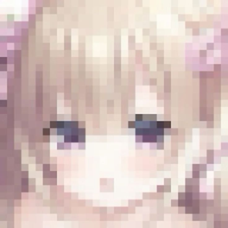

Проверка сайтов
CodeCheck MCP
Проверяет готовый сайт в настоящем браузере на разных размерах экрана и находит проблемы. К каждой находке прикладывает скриншот, чтобы ИИ мог сразу её исправить.
- Браузер Playwright
- Доступность
- Скорость
- Безопасность
- SEO
..а человек я просто неплохой.
Я вайбкодер: придумываю идею, а ИИ помогает собрать её в код. Сайты делаю, потому что мне это нравится. А ещё стараюсь быть добрым и честным с людьми. Ниже можно послушать музыку, которую ИИ написал для меня, и спросить что-нибудь у ИИ-поддержки.

Делаю сайты не потому что надо, а потому что нравится. Музыку пишет ИИ по моей просьбе.

// PORTFOLIO · сайты и MCP-серверы
Сайт для индивидуальных и семейных консультаций.
Открыть →Сайт строительной компании, которая строит дома под ключ.
Открыть →Сайт кафе в городе: меню, отзывы, контакты.
Открыть →Сайт фитнес-клуба с тренировками.
Открыть →Учебный интернет-магазин одежды.
Открыть →Сайт стильного и модного барбершопа в Краснодаре.
Открыть →Проверяет готовый сайт в настоящем браузере и находит проблемы с доступностью, скоростью, безопасностью и SEO.
GitHub →Превращает работу над кодом в RPG: уровень, опыт и квесты из реальных проблем в коде.
GitHub →// инструменты, которые я сделал
Проверка сайтов
Проверяет готовый сайт в настоящем браузере на разных размерах экрана и находит проблемы. К каждой находке прикладывает скриншот, чтобы ИИ мог сразу её исправить.
Игра для разработчика
Превращает работу над кодом в RPG: у проекта есть уровень, опыт и квесты из реальных проблем в коде. Опыт даётся только после того, как проверка подтвердила, что проблема исправлена.
Если что-то непонятно, спроси помощника. Он отвечает сразу, в любое время. Пока он работает по готовым ответам, настоящую нейросеть подключим позже.
онлайн